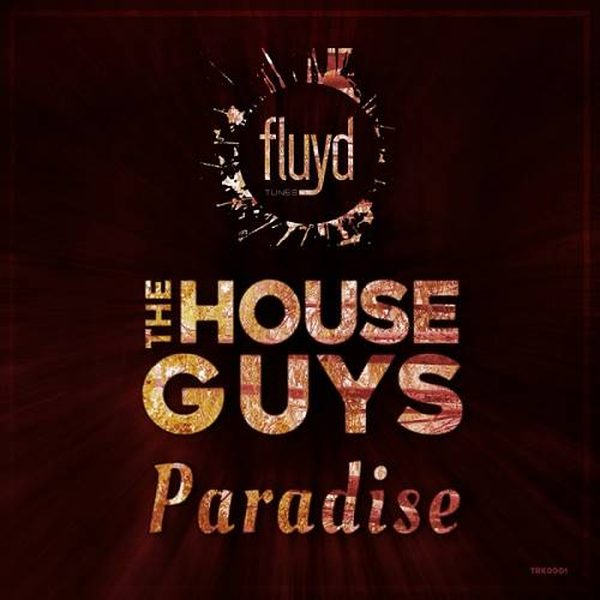

I 20 dischi
 1
You Give Me A FeelingVintage Culture, James Hype
1
You Give Me A FeelingVintage Culture, James Hype
 2
So Many TimesBruno Be & Sandeville
2
So Many TimesBruno Be & Sandeville
 3
KIPELEPAOLO M. & EUGENIO COLOMBO
3
KIPELEPAOLO M. & EUGENIO COLOMBO
 4
StrangersDom Dolla, Mansionair
4
StrangersDom Dolla, Mansionair
 5
Obligatory Work SongPitter Patter
♪
6
EartshineKhoMha
5
Obligatory Work SongPitter Patter
♪
6
EartshineKhoMha
 7
Better ThingsSunnery James & Ryan Marciano, GINGE, QG
7
Better ThingsSunnery James & Ryan Marciano, GINGE, QG
 8
No FunArmin van Buuren x The Stickmen Project
♪
9
LifeGoesOn (StefanoPain e FrancescoPittaluga HouseRemix)GeorgiePorgie
8
No FunArmin van Buuren x The Stickmen Project
♪
9
LifeGoesOn (StefanoPain e FrancescoPittaluga HouseRemix)GeorgiePorgie
 10
Close Your EyesKSHMR x Tungevaag
10
Close Your EyesKSHMR x Tungevaag

11 ParadiseTHE HOUSEGUYS 12
El caminoLA
♪
13
Make you danceElegando
12
El caminoLA
♪
13
Make you danceElegando
 14
The answerTom&Jam , Yton
14
The answerTom&Jam , Yton
 15
The Hanging TreeSteve Forest & Te Pai
15
The Hanging TreeSteve Forest & Te Pai
 16
NastyTujamo x PBH & Jack
16
NastyTujamo x PBH & Jack
 17
ObsessedPink Panda
17
ObsessedPink Panda
 18
Been A WhileThomas Nan & One Of Six
18
Been A WhileThomas Nan & One Of Six
 19
SomewhereMelyJones & Eric Spike
19
SomewhereMelyJones & Eric Spike
 20
ChampagneDj Saved M.L.
20
ChampagneDj Saved M.L.
La tracklist
- 1 You Give Me A Feeling Vintage Culture, James Hype Insomniac Records
- 2 So Many Times Bruno Be & Sandeville CONTROVERSIA
- 3 KIPELE PAOLO M. & EUGENIO COLOMBO PinkStar Black
- 4 Strangers Dom Dolla, Mansionair Three Six Zero Recordings
- 5 Obligatory Work Song Pitter Patter Farris Wheel Recordings
- 6 Eartshine KhoMha Armada Music
- 7 Better Things Sunnery James & Ryan Marciano, GINGE, QG SONO Music
- 8 No Fun Armin van Buuren x The Stickmen Project Armada Music
- 9 LifeGoesOn (StefanoPain e FrancescoPittaluga HouseRemix) GeorgiePorgie Bootleg
- 10 Close Your Eyes KSHMR x Tungevaag Dharma
- 11 Paradise THE HOUSEGUYS Fluyd Tunes
- 12 El camino LA Twenyone / Bendo Music / Capitol
- 13 Make you dance Elegando Hexagon
- 14 The answer Tom&Jam , Yton Hexagon
- 15 The Hanging Tree Steve Forest & Te Pai Lithuania HQ
- 16 Nasty Tujamo x PBH & Jack Spinnin' Records
- 17 Obsessed Pink Panda Spinnin' Records
- 18 Been A While Thomas Nan & One Of Six Heartfeldt Records
- 19 Somewhere MelyJones & Eric Spike Hexagon
- 20 Champagne Dj Saved M.L. Bang Record